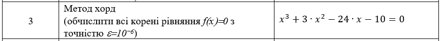

Завдання 2 Теорія
За обраним варіантом потрібно реалізувати метод хорд.

Метод хорд, також відомий як метод хорд Ньютона або метод секущих, є числовим методом для знаходження наближених розв'язків рівнянь. Він базується на ідеї лінійного наближення функції в точці і будує послідовні лінійні наближення для знаходження кореня рівняння.
Основна ідея методу хорд полягає в наступному:
1 Виберіть початкові значення двох точок x0 та x1, таких щоб f(x0) та f(x1) мали різні знаки;
2 Побудуйте хорду (пряму лінію), яка проходить через точки (x0, f(x0)) та (x1, f(x1));
3 Знайдіть перетин хорди з віссю абсцис, це буде нова точка x2;
4 Повторюйте кроки 2 та 3 до досягнення заданої точності або збіжності.
Формула для знаходження нової точки xᵢ за допомогою методу хорд виглядає наступним чином: xᵢ = xᵢ₋₁ - f(xᵢ₋₁) * (xᵢ₋₁ - xᵢ₋₂) / (f(xᵢ₋₁) - f(xᵢ₋₂))
Цей процес триває до тих пір, поки досягнуто необхідної точності або досягнуто збіжності, коли різниця між послідовними наближеннями стає досить малим значенням.
Варто відзначити, що метод хорд може бути менш ефективним у порівнянні з іншими числовими методами, такими як метод Ньютона або метод бісекції. Він може збігатися повільніше або навіть не збігатися для деяких функцій або початкових значень. Також вимагається вибір початкових значень, для яких функція має різні знаки.
Однак, метод хорд все ще може бути корисним для деяких простих функцій або у випадках, коли інші методи недоступні або неадекватні. Його перевагою є те, що він є прямолінійним методом, який не вимагає обчислення похідних функції.
Також існує варіант методу хорд, відомий як модифікований метод хорд або метод секущих, в якому замість побудови хорди використовується дотична до кривої. Це може призвести до швидшої збіжності методу.